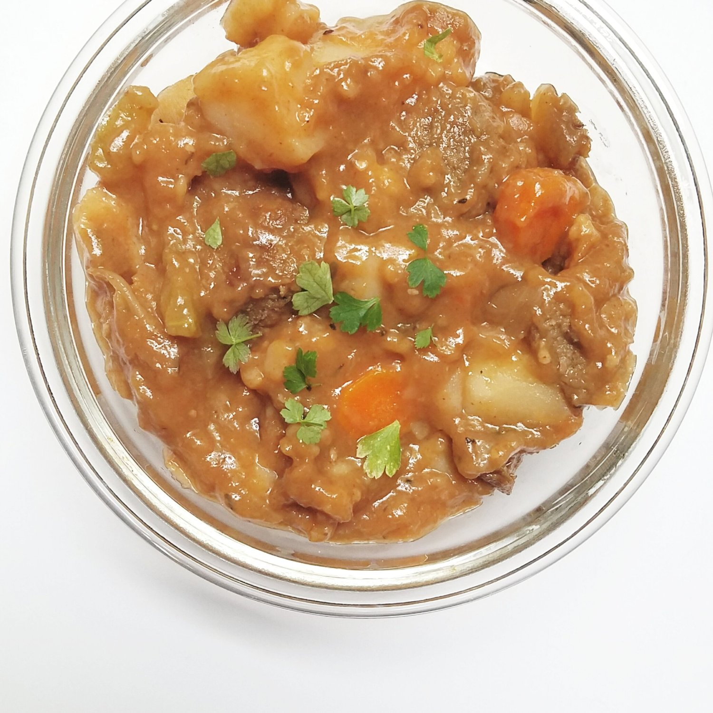

Vegan Beef Stew (Slow-Cooker Friendly)

Sometimes you just need a big bowl of vegan beef stew to come home to and make you feel at ease. This vegan beef stew recipe is wholesome, hearty, and can be make in a slow-cooker while you're out and about. This recipe is entirely vegan, sugar free, and dairy free!
I was never big on beef stew as a kid, and it never really struck me as a go-to type of food. For some reason, though, last week I was hit with a massive craving for it. Weird? Possibly. Feel so right? You betcha. There's nothing quite as pleasant as the smells of stew permeating the house as you tuck in for dinner. Long day, PJs on, stew in belly. Just the way I like it.
This vegan beef stew recipe is fairly mess-free to make; it can either be made in one single pot, or in a pan and a crockpot. You know I like easy cleanup these days.
I love the addition of the beefless tips here as the vegan meat substitute. They are flavorful and hearty, which leaves you very satisfied. You could also add peas if you'd like, or swap the celery with peas as the green ingredient. Let me know if you try this out! Comment below or tag me on Instagram if you do!
Vegan Beef Stew (Slow-Cooker Friendly)
Serves: 4
-
1 bag of Gardein Beefless Tips
-
1 TBSP olive oil
-
1/2 onion, chopped
-
2 large carrots, peeled and sliced into coins
-
2 celery stalks, sliced into coins similar size to the carrots
-
2 potatoes (I used Yukon Gold) cut into 1-inch cubes
-
4 cups vegetable broth
-
3 garlic cloves, peeled and minced
-
1 TBSP tomato paste
-
1 TBSP liquid smoke
-
1/2 TBSP paprika
-
1 bay leaf
-
1/4 tsp thyme
-
1 tsp salt
-
1 tsp black pepper
-
3 TBSP flour
-
1 TBSP cornstarch
-
Heat a large pan or pot and add the beefless tips and olive oil. Cook for 7-8 minutes, until the sides of the beefless tips are crisp and browned.
-
Once browned, fill a large pot with the beefless tips and the remaining ingredients (except for flour and cornstarch). **See Notes for Slow Cooker Instructions
-
Bring the contents to a boil. Once boiling, let simmer for 30-45 minutes, until the potatoes are tender and the sauce starts to thicken.
-
Once thoroughly cooked and thick, mix the flour and cornstarch in a small bowl. Add 3-4 TBSP water to the bowl and mix thoroughly until no clumps remain. Once mixed, pour into the simmering pot and stir well. Cook for another 5-6 minutes; the contents will begin to thicken further.
-
Remove from heat and enjoy! The stew will thicken further after cooling.
**If using a slow cooker, place all ingredients (except for flour and cornstarch) in the slow cooker at step 2. Let cook for 2 hours. Proceed to step 4; allow the slow cooker to run another 1 hour after stirring into the flour/cornstarch mixture. Enjoy!